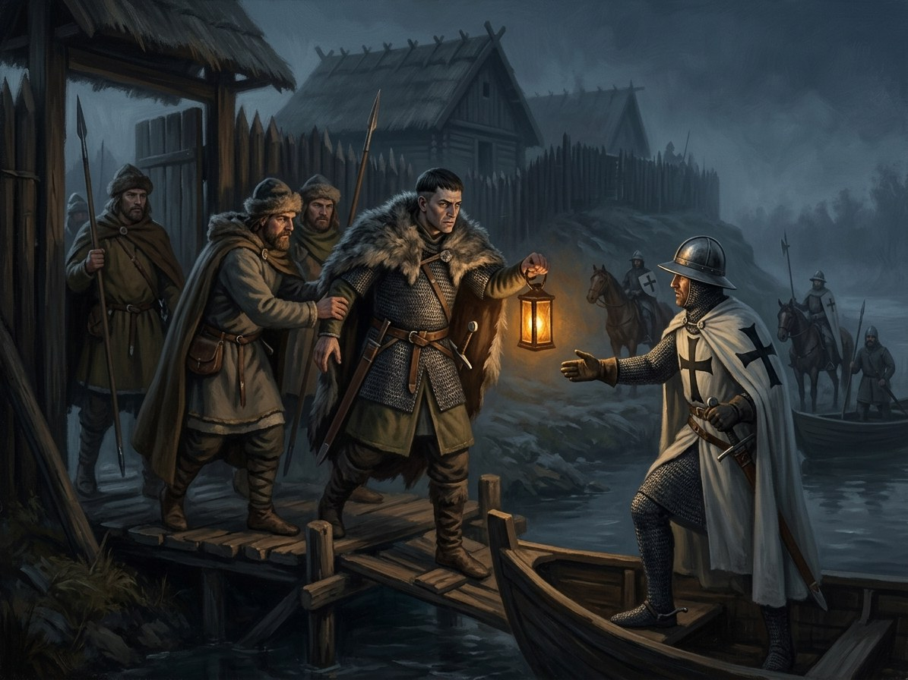

Vytautas flees to the Order again¶
Relations
Caused by: Trakai granted to Skirgaila (1382-92)
Causes: Treaty of Lyck; hostages demanded
Location: Königsberg (Karaliaučius)
Participants: Vytautas
Vytautas flees to the Order again

Vytautas flees to the Order again · event¶
Type |
event |
Years |
1389 |
Status |
Historical record |
Book |
|
Note |
Vytautas defects to the Teutonic Order a second time after Jogaila fails to return Trakai (1390). |
Where: Königsberg (Karaliaučius) (on the map)
What the chronicles say [Historical record]¶
In May 1389 at Lublin Jogaila mediated between Skirgaila and Vytautas; Vytautas signed a declaration of loyalty to Skirgaila, but his position as Duke of Lutsk was not formally recognised. In 1389 a plot to seize Vilnius castle using armed men in supply wagons “sent for his sister’s wedding” was betrayed by a spy (Wikipedia, Lithuanian Civil War 1389–92, citing Urban and Ivinskis) and the conspirators were executed; Vytautas’s allies Tautvilas and Ivan Olshanski lost Navahrudak and Halshany. (The wedding detail may be a Narbutt-type embellishment.) Vytautas fled to the Teutonic Order and on 19 January 1390 signed the Treaty of Lyck (Ełk), reaffirming the 1384 Königsberg terms; the Order demanded hostages: his brother Žygimantas (Sigismund), wife Ona, daughter Sofija, sister Rymgajla and other nobles. Žygimantas was a hostage from 1390 to 1398 (VLE gives 1389–98).
What really happened [The saga’s invention]¶
The wedding wagons of the Book II ch. 5 plot (forty-two wagons, a real wedding, arms beneath the oat sacks; bride Daumantė and her father Rimgaudas are the saga’s) are the saga’s elaboration of the supply-wagon plot. Pinčiukas sold the plan to Skirgaila for a miller’s debt. Perkūnas’s claim tightens: thunder without rain over the road. At Lyck the oaths are sworn on relics, and the Iron Saint keeps Christian oaths. Marquard von Salzbach, Vytautas’s old captive and friend, signs for the Order and offers a velvet threat to the hostages (“grąžinu skolą”); Vytautas says “Aš tai prisiminsiu”. (The insult to Birutė belongs to Raciąż, 1404, not to Lyck.)
Consequences¶
Caused by Trakai being Skirgaila’s. It leads to the Treaty of Lyck and the siege of Vilnius in September 1390, where Vytautas stands with the Order against the city he saved in 1384.
Dramatisation¶
Book II ch. 5 “Vestuvių Vežimai” (Vytautas; autumn 1389, Vilnius, then the road to Prussia in winter) and ch. 6 “Įkaitų Pilis” (Ona; January to August 1390, Lyck and Rastenburg; the hostages are Ona, Sofija, Žygimantas, Rymgailė, Jonas Alšėniškis and others). The event takes place at Königsberg.
Connections¶
graph LR
ev_lyck_1390["Treaty of Lyck; hostages demanded"]
ev_second_defection["Vytautas flees to the Order again"]
ev_trakai_to_skirgaila["Trakai granted to Skirgaila (1382-92)"]
konigsberg["Königsberg (Karaliaučius)"]
vytautas["Vytautas"]
ev_second_defection -->|Location| konigsberg
ev_second_defection -->|Causes| ev_lyck_1390
ev_trakai_to_skirgaila -->|Causes| ev_second_defection
vytautas -->|Took part in| ev_second_defection
style ev_second_defection stroke-width:3px